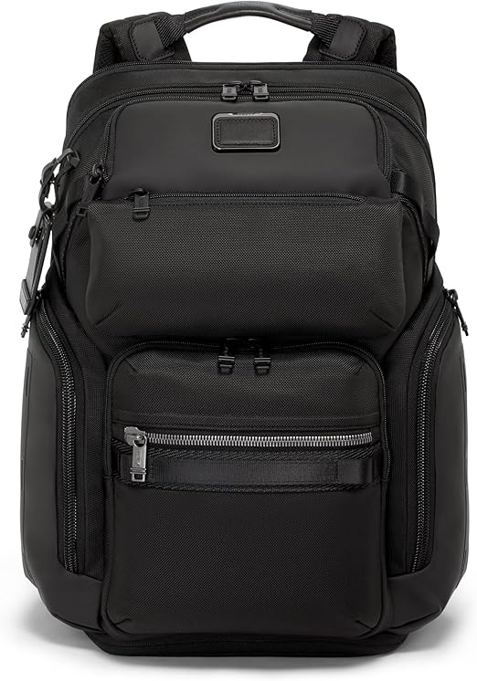

⭐️⭐️⭐️⭐️⭐️ “Hiked through three rainstorms—gear stayed completely dry. This pack is a beast.” — Alex D.

$99.99
Built for serious adventurers, the Nomad Waterproof Hiking Pack is engineered to withstand the harshest conditions while keeping your gear safe and dry. Perfect for backcountry expeditions, rainy treks, and mountain climbs.
- Fully waterproof and mud-resistant shell
- 50L capacity with expandable side compartments
- Built-in hydration bladder pouch
- Chest and waist straps for extra support
- Reflective striping for low-light visibility